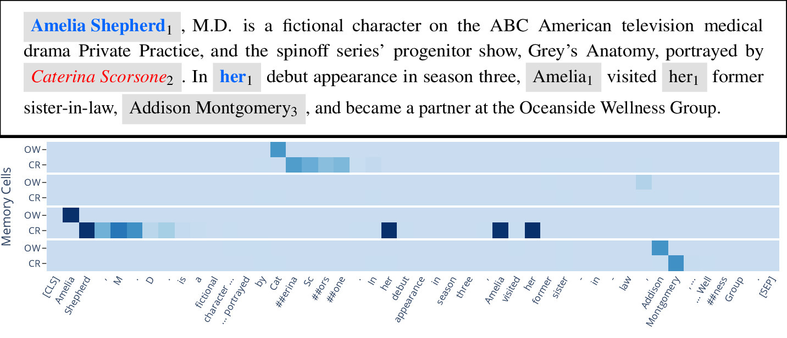
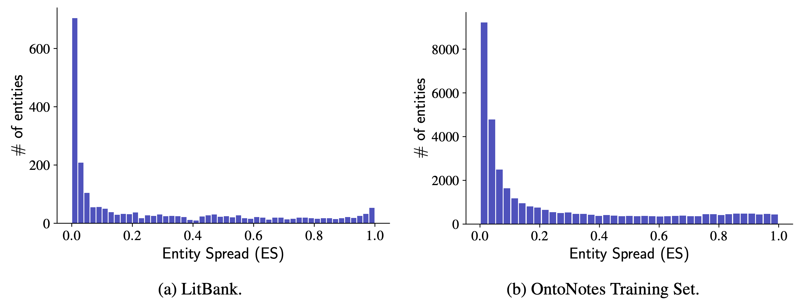
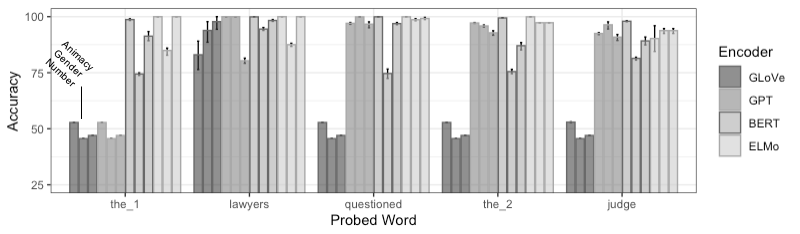
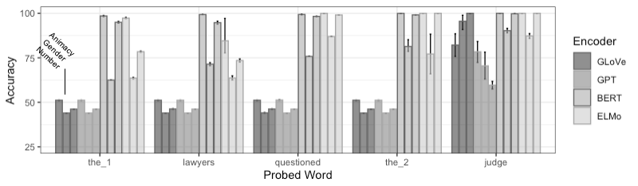
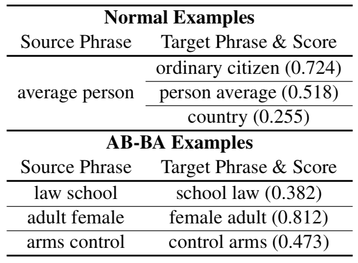
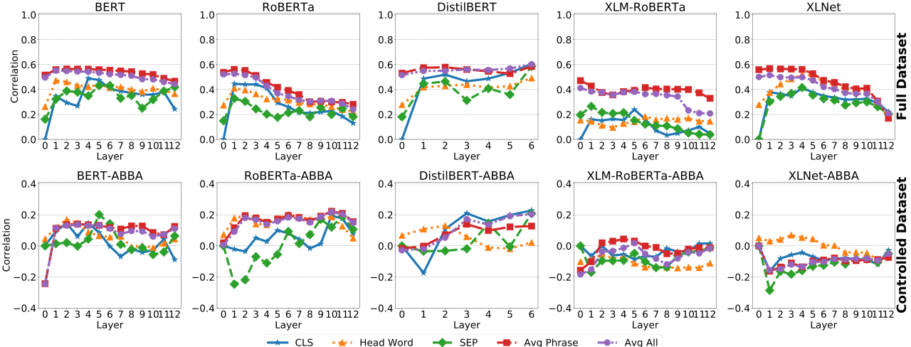

World Modeling for Natural Language Understanding
How should AI systems understand what they read? Should AI systems emulate people? How do
people understand what they read?
While there are many theoretical models of human reading comprehension (
McNamara and Magliano, 2009), certain concepts have drawn widespread support from psychologists and cognitive scientists. For example, human readers identify protagonists, attribute mental states to them, and expect them to act in a goal-directed manner; events are situated within spatiotemporal contexts; and causal links are formed among events (
Graesser et al., 1994;
Zwaan and Radvansky, 1998;
Elson, 2012;
inter alia). We refer to this information as the
world described by the text.
We seek to develop systems to automatically construct rich representations of the world underlying the text being analyzed. In designing world construction models we use abstractions identified by cognitive scientists and psychologists as fundamental in human understanding and reading comprehension. We also design targeted probing tasks to enable fine-grained assessment of the extent to which systems have captured this information.
There is a tension in the AI community between pattern recognition and model-building (
Lake et al., 2017). Pattern recognition, the dominant paradigm in most application areas, interprets learning as the ability to make predictions. Model-building, by contrast, seeks to construct a hypothesis that can explain a set of observations. This project seeks to develop a model-building framework for natural language understanding, taking inspiration from Lake et al. in using ideas from cognitive science and psychology. The goal is to develop AI systems that are highly effective while offering greater flexibility, robustness, and interpretability than methods based on pattern recognition.
Below we describe individual research projects oriented towards these goals:
Memory-Augmented Neural Readers
Bounded Memory Models for Coreference Resolution
Probing for Entity and Event Information in Contextualized Embeddings
Probing for Complex Meaning Information
Memory-Augmented Neural Readers
We are developing memory-augmented neural networks in which the memory is designed to capture information
about named entities in order to resolve references. Below is a visualization of our current model, PeTra ("People Tracking"),
run on text from the
GAP dataset:

The visualization above shows a memory with four memory cells, showing overwrite (OW) and coreference (CR) scores for each
memory cell at each position in the text.
The model has learned to associate one memory cell with each entity mentioned, and correctly resolves the reference in the
GAP annotations (the blue mentions in the text).
For more details, please see the following:
PeTra: A Sparsely Supervised Memory Model for People Tracking
Shubham Toshniwal,
Allyson Ettinger,
Kevin Gimpel,
Karen LivescuACL 2020
[
arxiv]
[
code]
[
colab]
[
bib]
Bounded Memory Models for Coreference Resolution
Coreference resolution systems are usually evaluated on short documents of a few hundred words. When seeking to run such systems on long documents, such as books, standard methods face challenges with runtime and memory usage. However, we can improve this situation by noting how, in typical texts, most entities have a very small "spread" (the number of tokens between the first and last mention of the entity). The histograms below show entity spreads in two coreference datasets:

Most entities have very small spreads in real-world documents. We can exploit this observation to design memory models that track a small, bounded number of entities, and to parameterize actions for the model to evict an entity currently being tracked in favor of a new entity encountered or to ignore an entity mention. The model learns to ignore and evict by mimicking oracle actions which can be derived from an annotated dataset. On two datasets, our bounded memory model achieves very similar performance to an unbounded variation, and reaches state-of-the-art results on LitBank.
For more details, please see the following:
Learning to Ignore: Long Document Coreference with Bounded Memory Neural Networks
Shubham Toshniwal,
Sam Wiseman,
Allyson Ettinger,
Karen Livescu,
Kevin Gimpel
EMNLP 2020
[
arxiv]
[
code]
[
colab]
[
bib]
Probing for Entity and Event Information in Contextualized Embeddings
Targeted diagnostic analyses are important both to assess our models' success in capturing world information, and also to establish baseline assessments of how well existing NLP models capture this information. In this project we focus on exploring the world information represented by pre-trained contextual encoders, testing systematically how this information is distributed across the contextualized representations for different tokens within each sentence.
We design probing tasks for transitive sentences (subject-verb-object structure), and we probe each token of the sentence for information about the entity participants (subject and object nouns), and event (verb) described in the sentence. We probe for different types of features of these components -- for subject/object nouns, these include the number, gender, and animacy of the corresponding entities, and for verbs, these include the timing of the event (tense), flexibility in number of participants (causative-inchoative alternation), and whether the event is a dynamic or stative event type. Mapping the encoding of these features across token embeddings of BERT, ELMo, and GPT models, we find that most tokens of a sentence encode information about subject, object, and verb, but different encoders prioritize different types of information. Figure 1 below shows the distribution of information about the subject noun, and Figure 2 shows the distribution of information about the object noun.
Figure 1:

Figure 2:

These figures show, for instance, that BERT, and to an extent ELMo, greatly deprioritize gender information about the entities, and ELMo in particular deprioritizes information about the object entity on subject tokens. GPT also deprioritizes object entity information, with the object token encoding more information about the subject entity than the object entity.
For more details, please see the following:
Spying on your neighbors: Fine-grained probing of contextual embeddings for information about surrounding words
Josef Klafka,
Allyson Ettinger
ACL 2020
[
arxiv]
[
bib]
Probing for Complex Meaning Information
The ability of a model to capture rich information about the world is critically contingent on its ability to compose complex concepts. Without this ability, models cannot accurately represent events or entities in connection with their properties (e.g., the fact that an entity is a "blue elephant" or that an event involves "studying diligently"). Ultimately, high-quality meaning composition is necessary for accurate representation of all but the very simplest information about the world -- while composition may not be necessary to recognize that a given event or entity was mentioned, composition will be necessary for representing all higher-level relationships and properties for these entities and events.
We design analyses for testing phrase meaning composition, and we apply these tests to examine composition of two-word phrases in representations from pre-trained transformer models. Our tests are divided into two settings: "original" tests that simply measure representations' correspondence with human indicators of phrase similarity, and "controlled" tests that hold constant the amount of word overlap between phrases, removing overlap cues as a superficial aid for model performance. Examples of original and controlled ("AB-BA") phrase pairs, for our test of correlation with human similarity ratings, are below:

Testing across models, layers, and representation types, we find a high level of correspondence with human judgments before control of word overlap -- however, after we control word overlap, performance drops to negligible levels. Below we show the results in both settings for the correlation analysis:

The results suggest that the tested representations contain faithful encoding of the word content of phrases, but there is little to suggest that these representations reflect more sophisticated meaning composition. From the perspective of world modeling, these results indicate that in order to attain rich and accurate encoding of complex world information, we will need to improve models' ability to compose complex concepts.
For more details, please see the following:
Assessing Phrasal Representation and Composition in Transformers
Lang Yu,
Allyson EttingerEMNLP 2020
[
arxiv]
[
bib]
Principal Investigators:
Collaborators:
This material is based upon work supported by the National Science Foundation under Award Nos.
1941178 and
1941160.
Any opinions, findings, and conclusions or recommendations expressed in this material are those of the author(s) and do not necessarily reflect the views of the National Science Foundation.